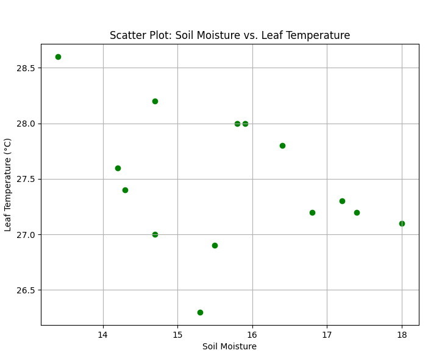

| Day | Leaf Temperature | Air temperature | Soil Moisture | pH | Normalized leaf temperture |
|---|---|---|---|---|---|
| Day 1 | 27.4 | 27.56 | 14.3 | 5.17 | 32.320341 |
| Day 2 | 27 | 27.9 | 14.7 | 5.5 | 31.981042 |
| Day 3 | 26.3 | 27.76 | 15.3 | 5.78 | 31.256048 |
| Day 4 | 26.9 | 26.7 | 15.5 | 5.02 | 31.666804 |
| Day 5 | 28 | 26.8 | 15.9 | 4.67 | 32.784657 |
| Day 6 | 28.6 | 26.37 | 13.4 | 4.82 | 33.307888 |
| Day 7 | 27.2 | 26.47 | 16.8 | 5.23 | 31.925741 |
| Day 8 | 27.1 | 27 | 18 | 5.46 | 31.920363 |
| Day 9 | 27.3 | 26.14 | 17.2 | 5.36 | 31.966826 |
| Day 10 | 27.8 | 27.2 | 16.4 | 5.18 | 32.656070 |
| Day 11 | 28 | 26.11 | 15.8 | 5.17 | 32.661470 |
| Day 12 | 28.2 | 27 | 14.7 | 4.82 | 33.020363 |
| Day 13 | 27.6 | 26.14 | 72.83 | 5.34 | 32.266826 |
| Day 14 | 27.2 | 23.9 | 17.4 | 5.17 | 31.466914 |
Threshold : 17.5-18% The critical soil moisture level, where the water absorption capacity diminishes significantly, is observed around Day 8 when the soil moisture level is 18. We can also observe the temperature on day 14 this is did not change vastly from the previous day.This indicates that beyond this point, plants might struggle to absorb adequate water, leading to potential stress.
Absorption Capacity:
On observing the above points Golden Eye-Grass has a dynamic water absorption capacity, responding to changes in environmental conditions. The absorption capacity of this plant is compartively high than Tumeric plant.We can observe clear changes in temperature with in a particular span of time.
Temperature Resilience and Adaptivity:
Golden Eye-Grass has a high temperature resilience, with the ability to regulate its temperature. The plant is able to maintain a relatively stable temperature despite the changes in soil moisture levels.This is a good indicator of the plant's health and resilience.Due to this resilience Curculigo orchioides demonstrates a high degree of adaptability to different environmental conditions
Leaf Temperature vs. Soil Moisture:
Leaf Temperature vs. pH :
Response lag:
The minute-wise data(on the excel sheets) reveals a responsive relationship between soil moisture and temperature in Curculigo orchioides, with a small observed time delay. We can observe changes in the leaf temperature for every 30 seconds which means the plant is either affected by the external factors or soil moisture changes which we are performing.
Moisture Utilization Efficiency:
Moisture Utilization Efficiency= Change in leaf temperature/Change in soil moisture
Correlation coefficient between pH and leaf temperature: -0.7867274673342695
Based on the above MUE values we can observe that there are more positive values than the number of negative values which suggests that this plant is utilizing the moisture levels efficienctly. This MUE value should be close to 1 for an efficient plant growth and this device is helpful for us to measure these MUE values to know the plant growth efficiency.
Ideal Moisture Range: : 14-16%
Ideal pH Range: : 5.5-5.8
Days 2 to 6 represent the optimal conditions for Curculigo orchioides, with the ideal
moisture
range and stable leaf temperature.
Day 8 marks a critical point where the soil moisture level reaches 18, potentially leading
to
decreased water absorption and an impact on temperature regulation.